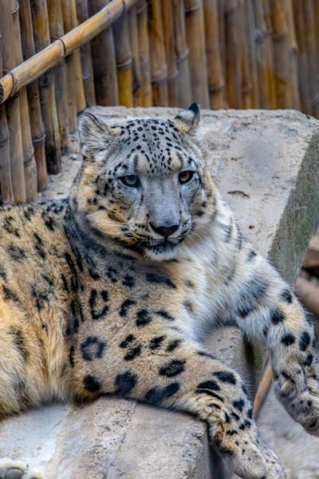

Snow Leopard

Snow leopards can leap up to 50 feet horizontally — roughly the length of a school bus.
- Habitat: high mountains of Central Asia
- Diet: carnivore (blue sheep, ibex, marmots)
- Lifespan: 15–18 years
- Status: vulnerable
Native to the rocky, alpine ranges of Central and South Asia, the snow leopard is a stocky big cat with a thick smoke-grey coat patterned for camouflage in snow. Its long, fluffy tail doubles as a balance pole on cliffs and a wraparound scarf while it sleeps. Estimates put the wild population at fewer than 7,000, and conservation groups are working to protect their habitat from livestock grazing and climate change.